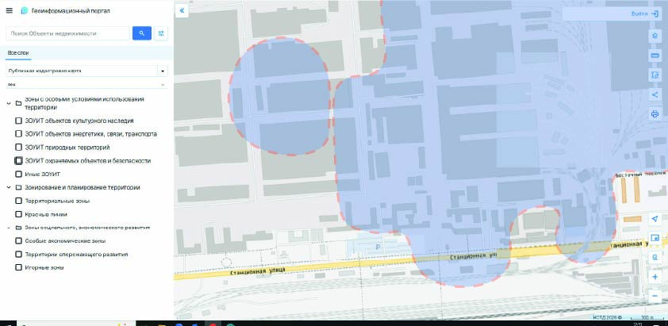

На этой схеме видно, как санитарно защитные зоны соседних предприятий могут перекрываться. Сначала посмотрите на обычную ситуацию, потом добавьте на карту третье предприятие и посмотрите, что меняется.

СЗЗ предприятий 1 и 2 не пересекаются. У каждого свой санитарный разрыв и своя граница контроля. На участке между зонами еще можно разместить СЗЗ нового объекта или другие объекты инфраструктуры.
Подвиньте переключатель и посмотрите, как меняются СЗЗ и нагрузка на границе.